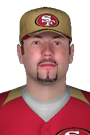

|
|
|  |
Ridin' High: Shaffer Hits for Cycle Sunday, April 28th , 2002 Finishing with 5 hits is a great day for any player, but Jacob Shaffer made it even more special by hitting for the cycle at Lambeau Field. Shaffer had 1 single, 2 doubles, 1 triple and 1 home run for the San Francisco 49ers and led them to a win, 12-4, over the Green Bay Packers. The left fielder also finished with 4 runs scored and 6 RBI. "Awesome," Shaffer said when asked how the accomplishment felt. Jacob Shaffer doubled in the 1st, singled in the 2nd, hit an RBI double in the 4th, hit a two-run triple in the 5th, hit a three-run home run off Jose Barrera in the 7th and struck out in the 9th. Shaffer is hitting .356 this year with 10 home runs and 23 RBIs. He also has an OBP of .425, 6 walks and scored 19 times. View Boxscore View Game Log Watch Highlights |


|